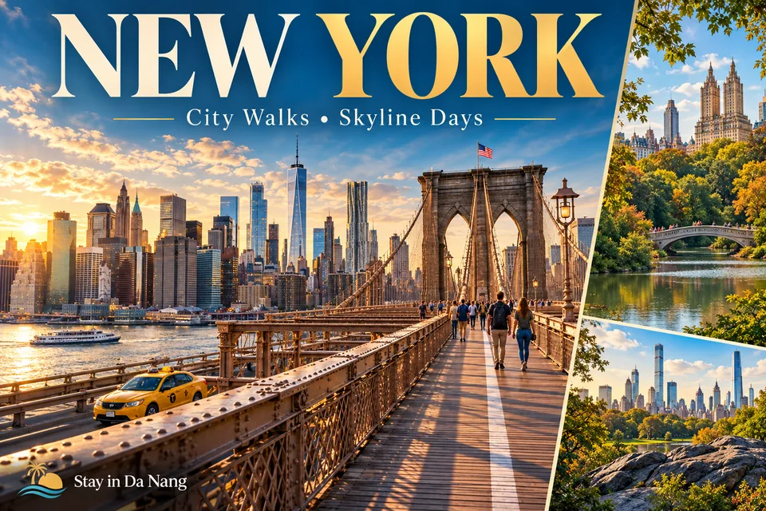

Four days in New York: Manhattan, Central Park and Brooklyn
Group stops by neighbourhood and transport route instead of repeatedly crossing the city. Keep the schedule manageable and include queueing and airport-transfer time.

Open / download HD image · PNG →WebP →


Day one: a Midtown walking cluster
Choose a few Midtown Manhattan stops and a break around Bryant Park. For an observation deck, confirm the exact building, admission time and ticket conditions. Check taxes and fees rather than assuming the first displayed price is final.
Day two: Central Park and one museum
Combine part of the park with one museum that matches your interests. Check official hours and admission requirements. Allow enough walking time and adapt to the day’s weather.
Day three: Lower Manhattan and Brooklyn Bridge
Group Lower Manhattan stops, then consider the bridge walk if fitness and conditions suit. Follow the pedestrian route and leave room for other walkers. Straight-line map distances do not represent the full walking journey.
Day four: a Brooklyn neighbourhood or suitable ferry
Choose one neighbourhood or a currently operating ferry route, avoiding several waterfront transfers before a flight. Distinguish public transport from separate sightseeing products. Confirm the airport and route with a sensible departure buffer.